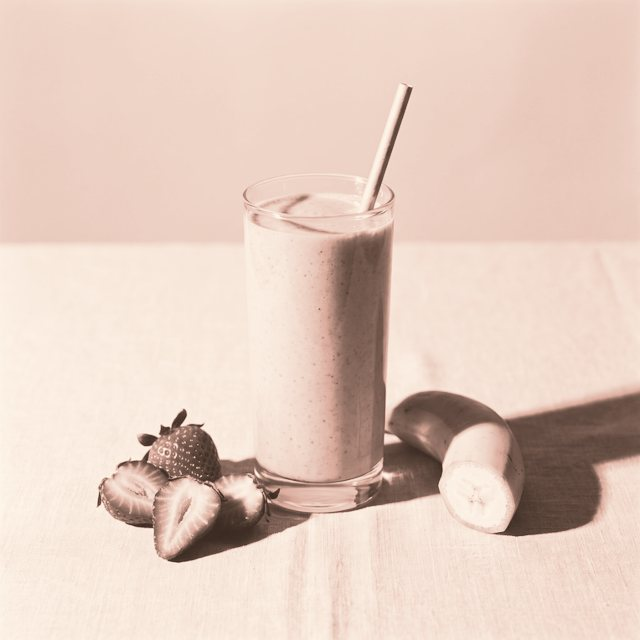
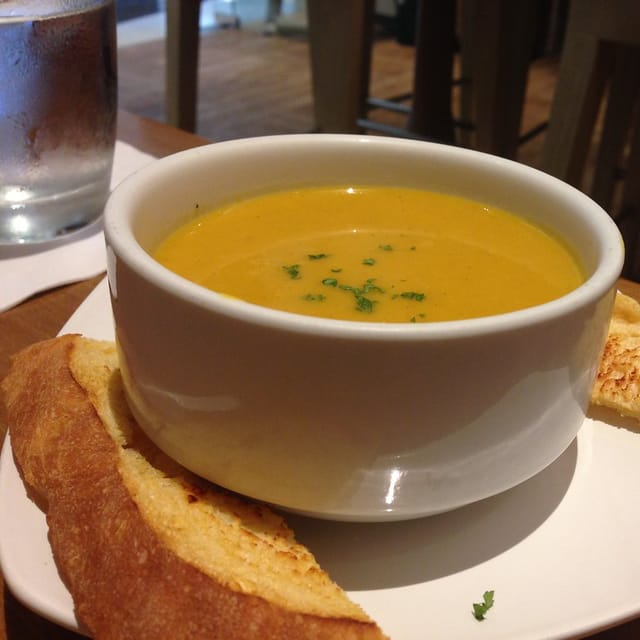
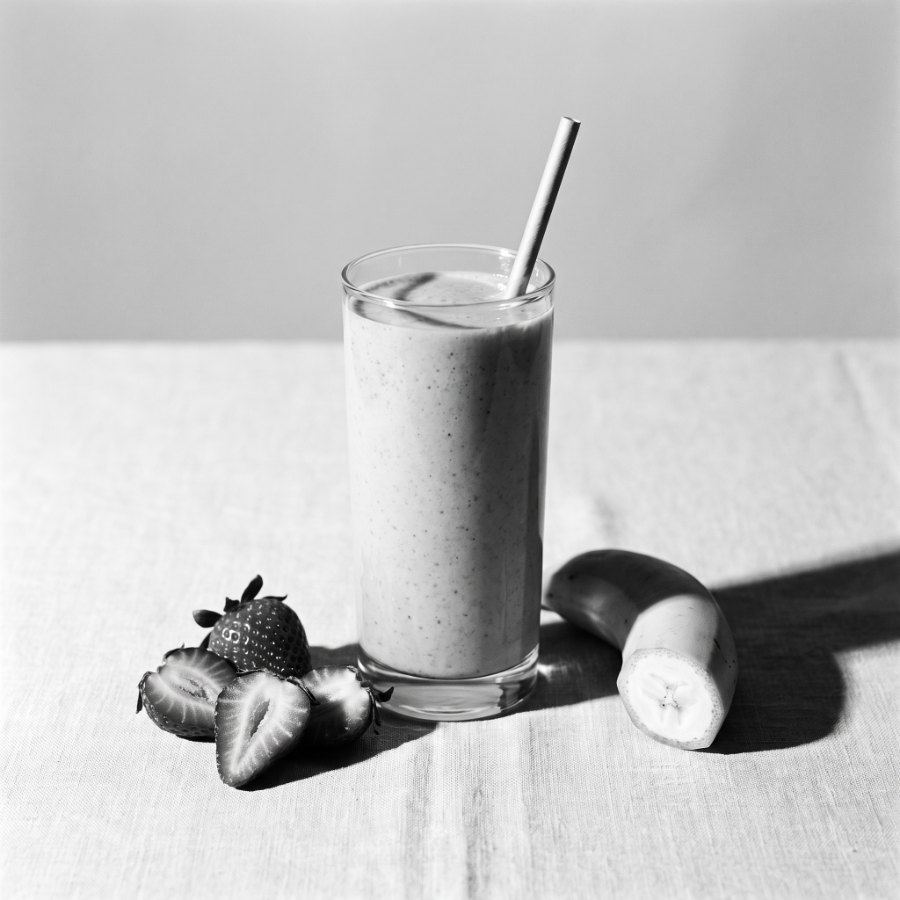
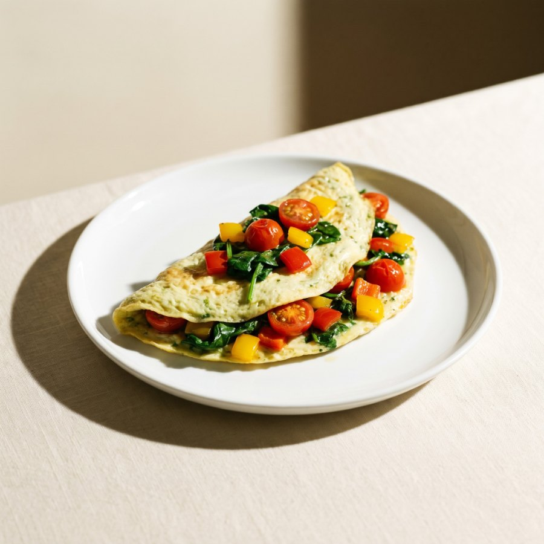
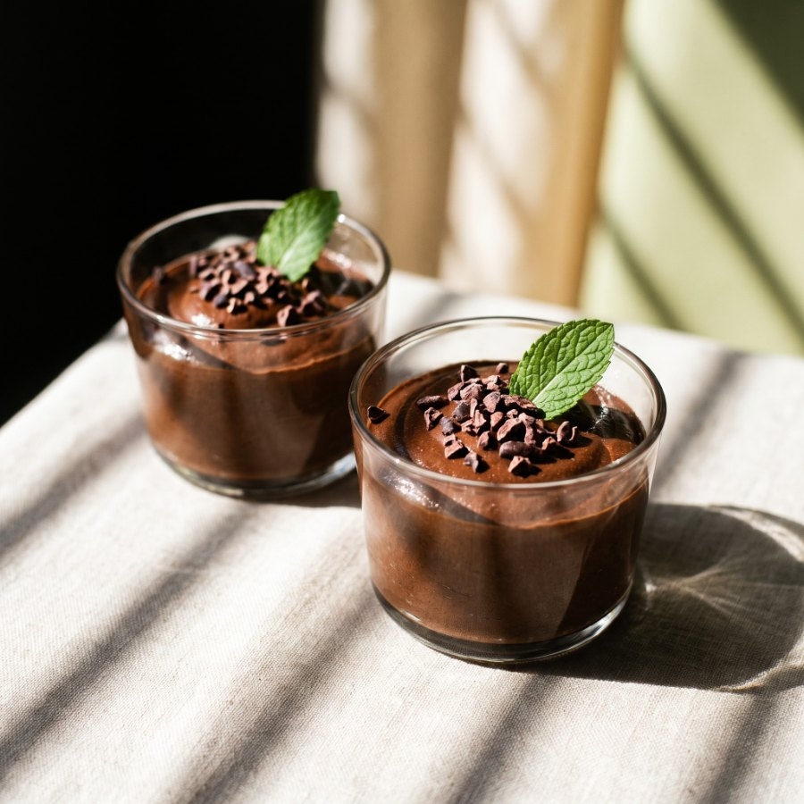
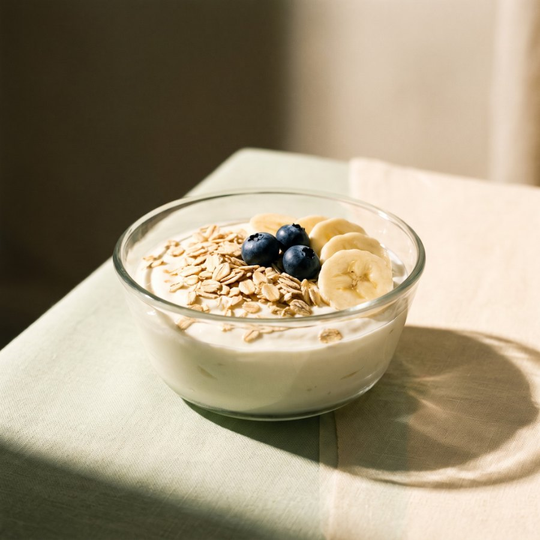
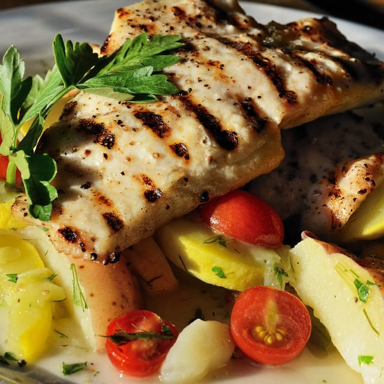
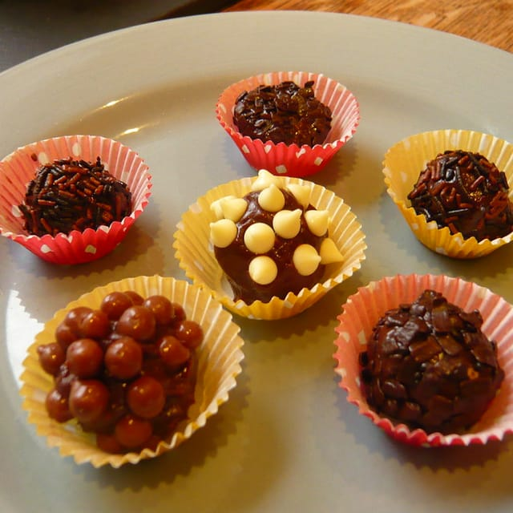
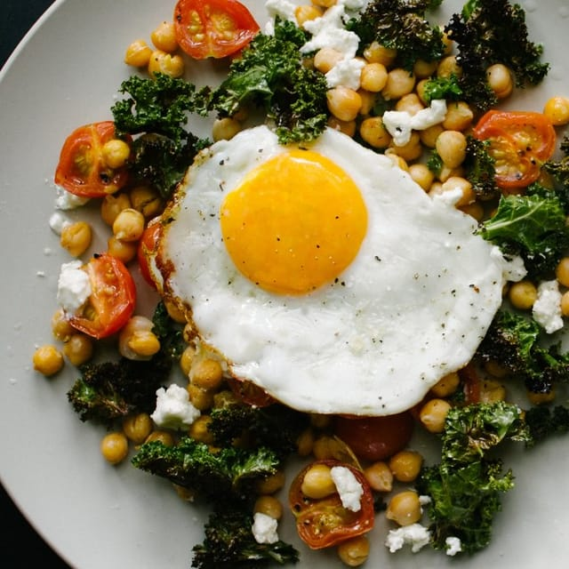
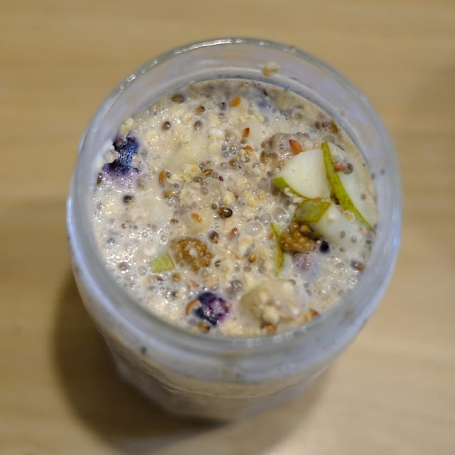

Coma pouco. Coma certo.
O app de receitas e hábitos para quem usa caneta emagrecedora e não sabe mais o que comer: 43 receitas com proteína, muitas prontas em 5 minutos, e um hábito novo por dia durante 30 dias.

Bolinho de caneca: 5 minutos no micro-ondas, cerca de 30 g de proteína.
A caneta fez a fome sumir. Só que ninguém te contou o que colocar no prato quando ela some.
Aí o dia vira um café de manhã, meia bolacha à tarde e, à noite, cansada, o que tiver na geladeira. A balança desce. Mas a disposição vai embora junto, e fica aquela sensação de estar emagrecendo do jeito errado.
Emagrecer comendo quase nada tem um preço: quando falta proteína, o corpo pode gastar músculo junto com a gordura.
E tem o medo que pouca gente fala em voz alta: o que acontece quando a caneta acabar? Se nada mudou na rotina, a fome volta, e os hábitos antigos voltam com ela.
O Dieta Fácil existe para a caneta não fazer o trabalho sozinha.
Como funciona no seu dia
Em 1 minuto, o app monta a sua rotina.
Você conta seus horários, o que não come (lactose, glúten, carne, ovo) e o que mais quer agora. Ele sugere uma meta inicial de proteína e só mostra receitas que fazem sentido para você.
Você abre e já sabe o que comer.
Café, lanche, almoço e jantar escolhidos para hoje. Fez? Toca e marca. A proteína, a água e as fibras vão somando sozinhas, sem contar caloria e sem planilha.
Experimente: toque nas bolinhas do celular.
Faz em 5 minutos, com o que tem em casa.
Ingredientes de mercado comum, passo a passo curto e sem termo difícil. Porções pequenas, pensadas para quem come pouco, mas com a proteína que o corpo precisa.
Um hábito novo por dia. Só um.
Beber água ao acordar. Deixar o lanche pronto. Colocar proteína no café. São 30 desafios pequenos em 4 fases, e cada fase concluída libera a próxima. É assim que a rotina muda sem sofrimento.
E você vê o seu corpo responder.
Peso, cintura e fotos de antes e depois num gráfico simples. Ver a linha descendo é o que faz você continuar nos dias em que dá vontade de largar. Tudo fica guardado só no seu celular.
Dia difícil? Tem plano.
Tem dia que a caneta pesa: o enjoo vem, a fome some ou o tempo acaba. O app tem uma tela só para esses dias. Escolha como você está hoje:
É exatamente o que aparece no app, do jeito que está aqui. Em vez de pular a refeição, você come o que desce bem.
Sem fome hoje? Normal.
Quando o apetite some, o segredo é comer pouco, mas com proteína. Coma devagar e pare quando estiver satisfeita.
- Divida a refeição em 2 ou 3 porções pequenas ao longo do dia.
- Líquidos e cremosos descem mais fácil: shake, iogurte, sopa.
- Beba água entre as refeições, não durante.
Descem fácil

Se a falta de apetite durar vários dias ou você não conseguir se hidratar, converse com seu médico.
43 receitas para quem come pouco
Porção pequena, muita proteína e quase nada de louça. Arraste para o lado e veja algumas.








Talvez você esteja pensando…
São as mesmas dúvidas de quase toda mulher antes de começar. Vamos a elas, com sinceridade.
“Eu mal sinto fome. Para que um app de dieta?”
É justamente para isso. Quando você come pouco, cada colherada precisa valer. O app troca o prato cheio por porções pequenas e cheias de proteína: um shake, um creme, um iogurte.
Não é para comer mais. É para comer o pouco do jeito certo.
“Não tenho tempo nem paciência para cozinhar.”
Nem precisa. Tem bolinho de caneca no micro-ondas, shake no liquidificador e lanche que você monta na noite anterior e leva na bolsa.
Para os dias corridos, filtre por “até 10 min” ou “sem fogão” e escolha.
“Já tentei dieta e desisti na segunda semana.”
Porque dieta pede tudo de uma vez. O Dieta Fácil pede uma coisa por dia: hoje, um copo d’água ao acordar. Amanhã, deixar o lanche pronto. Pequeno o bastante para caber no dia mais cansativo.
Não tem cardápio proibido nem culpa. Tem constância, um passo de cada vez.
“E quando eu parar a caneta?”
Essa é a pergunta mais importante, e é por isso que o app existe. A caneta ajuda com a fome. Quem segura o resultado depois são os seus hábitos.
Em 30 dias você aprende a montar o prato, a ter proteína à mão e a se planejar. Isso fica com você quando a caneta sair.
“Tenho restrição. Não vai servir para mim.”
Você marca o que não come logo no começo (lactose, glúten, carne, ovo) e o app esconde o que não serve. Também dá para tirar ingredientes que você simplesmente não gosta.
“Minhas fotos e meu peso vão parar na internet?”
Não. Seguindo a LGPD, tudo o que é seu fica guardado no seu próprio celular. O servidor só sabe o seu e-mail, para confirmar a compra.
“Não sou boa com tecnologia.”
Se você usa o WhatsApp, você usa o Dieta Fácil. Entra com um toque na sua conta Google, sem criar senha. O próprio app mostra como colocar o ícone na tela inicial do celular.
“Isso substitui a minha nutricionista?”
Não, e a gente prefere ser honesto com você. O Dieta Fácil segue recomendações gerais de alimentação saudável e ajuda no dia a dia, entre uma consulta e outra. Se a sua nutricionista indicar outra meta de proteína, é só ajustar no app.
Ele também não orienta sobre o uso da caneta. Isso é sempre com o seu médico.
Seus 30 dias
Um desafio por dia, pequeno o bastante para caber na rotina mais corrida. Esta é a lista completa.
Primeiros passos
dias 1 a 7
- Beba um copo de água ao acordar dia 1
- Deixe um lanche pronto para amanhã dia 2
- Coloque uma proteína no café da manhã dia 3
- Faça o bolinho de caneca no lanche dia 4
- Coma devagar na refeição principal dia 5
- Metade do prato com legumes dia 6
- Registre seu peso e medidas dia 7
Ritmo
dias 8 a 14
- Beba 1,5 litro de água dia 8
- Planeje o cardápio de amanhã dia 9
- Inclua uma fibra extra dia 10
- Caminhe 15 minutos dia 11
- Troque o doce da tarde dia 12
- Prepare o frango da semana dia 13
- Durma 7 horas dia 14
Constância
dias 15 a 21
- Bata a meta de proteína do dia dia 15
- Leve um lanche na bolsa dia 16
- Duas refeições sem tela dia 17
- Experimente uma receita nova dia 18
- Caminhe 20 minutos dia 19
- Beba 2 litros de água dia 20
- Registre sua evolução dia 21
Novo estilo de vida
dias 22 a 30
- Monte 3 marmitas dia 22
- Exercício de força leve dia 23
- Algo verde em cada refeição dia 24
- Observe sua fome dia 25
- Cozinhe para alguém dia 26
- Um dia completo do cardápio dia 27
- Caminhe 30 minutos dia 28
- Escreva 3 conquistas dia 29
- Feche o ciclo dia 30
Cada fase concluída libera a próxima.
No fim, a rotina é sua.
É para você se…
- usa ou vai começar a caneta e não sabe o que comer agora que a fome mudou;
- pula refeição porque “não desce nada” e depois se sente fraca;
- quer emagrecer com disposição, e não às custas da sua saúde;
- tem a rotina corrida e precisa de receita de minutos, não de horas;
- quer hábitos que continuem quando a caneta acabar.
Não é para você se…
- procura uma dieta milagrosa ou um cardápio de fome;
- quer trocar o acompanhamento do médico ou da nutricionista por um app;
- espera que a caneta resolva tudo sozinha, sem mudar nada na rotina.
O que você leva hoje
- App Dieta FácilPara Android e iPhone. Fica na tela inicial e abre como um aplicativo.incluso
- 43 receitas com proteínaCom filtros por tempo, preparo e restrição, e foto de cada uma.incluso
- Cardápio do dia montado para vocêCafé, almoço, lanche e jantar nos seus horários, respeitando o que você não come.incluso
- Jornada de 30 dias30 desafios em 4 fases, um hábito pequeno por dia.incluso
- Tela “Dia difícil”O que comer nos dias sem fome, com enjoo ou sem tempo.incluso
- Metas de proteína, água e fibrasSomam sozinhas a cada receita que você marca.incluso
- Lembretes no celularÁgua e refeições nos horários da sua rotina.incluso
- Seu progresso, só seuPeso, medidas, gráfico e fotos de antes e depois guardados no seu aparelho.incluso
R$37
por tudo isso, em pagamento único
Sem mensalidade. Custa menos que um pedido de delivery, e você usa todos os dias.
Teste por 7 dias. O risco é todo nosso.
Use o app, faça as receitas, comece os desafios. Se em 7 dias achar que não é para você, peça o reembolso pela Kiwify e devolvemos 100% do valor. Sem pergunta e sem burocracia.
Ainda com dúvida?
Como eu recebo o acesso?
Depois do pagamento você recebe um e-mail com o link do app. Abra o link e toque em “Continuar com Google” usando o mesmo e-mail da compra. Pronto: o app já reconhece que você é cliente.
Funciona no iPhone?
Sim. No iPhone você abre pelo Safari e adiciona à tela de início; o app mostra o passo a passo. No Android, ele oferece a instalação sozinho. Nos dois, abre como um aplicativo normal.
É assinatura? Vou pagar todo mês?
Não. É um pagamento único. Nada de cobrança escondida no cartão.
Preciso comprar whey?
Não. 26 das 43 receitas não levam whey. Ele ajuda a bater a meta de proteína com pouca comida, mas é opcional. Dá para filtrar as receitas e ver só as que não usam.
Serve para qualquer caneta?
O app cuida da sua alimentação e dos seus hábitos, não do remédio. Ele foi pensado para a rotina de quem usa caneta emagrecedora (pouca fome, enjoo em alguns dias), mas não dá orientação sobre medicamento. Dose e uso são sempre com o seu médico.
E se eu não uso caneta?
As receitas e os hábitos servem para qualquer mulher adulta que queira comer melhor com pouco tempo. Só saiba que o foco é a rotina de quem come pouco.
E se eu trocar de celular?
Seu acesso continua: é só entrar com o mesmo Google. Como seus registros ficam no aparelho, use antes “Baixar meu progresso” no Perfil e depois restaure no celular novo.
E se eu não gostar?
Você tem 7 dias de garantia. Peça o reembolso pela própria Kiwify e recebe 100% de volta.
Daqui a 30 dias a caneta vai ter feito a parte dela. Comece hoje a fazer a sua.
Quero o Dieta Fácil por R$ 37